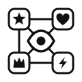

The icon sets of the world, nearly all under open licenses, and the tools that study images in art history, downloaded and joined into one library, then connected in one knowledge graph: from the lion icons of Noto, OpenMoji and Game Icons to the lion of Iconclass, 25F23(LION), and of the Chinese Iconography Thesaurus, 獅.
Les jeux d'icônes du monde, presque tous sous licence ouverte, et les outils qui étudient les images en histoire de l'art, téléchargés et réunis en une seule bibliothèque, puis reliés dans un graphe de connaissances : des lions de Noto, OpenMoji et Game Icons au lion d'Iconclass, 25F23(LION), et du thésaurus d'iconographie chinoise, 獅.
One SVG file per icon, from 280 icon sets, with one id per icon, its tags, its author and its license, all searchable offline.
Un fichier SVG par icône, issu de 280 jeux d'icônes, avec un identifiant, ses mots-clés, son auteur et sa licence, le tout consultable hors ligne.
Icon libraries (Lucide, Phosphor, Tabler, Material Design Icons, Iconify) and art-history tools (Iconclass, AIKON, Panoptic, Tropy, Mirador, OpenSeadragon).
Des bibliothèques d'icônes (Lucide, Phosphor, Tabler, Material Design Icons, Iconify) et des outils d'histoire de l'art (Iconclass, AIKON, Panoptic, Tropy, Mirador, OpenSeadragon).
Projects, icon sets, licenses, makers, topics and 1,875 icon concepts, joined by 17,208 connections; 995 concepts link to Iconclass and 530 to Chinese iconography.
Projets, jeux d'icônes, licences, auteurs, thèmes et 1 875 concepts d'icônes, reliés par 17 208 connexions ; 995 concepts sont reliés à Iconclass et 530 à l'iconographie chinoise.
mdi:anchor or ph:acorn-bold.mdi:anchor ou ph:acorn-bold.| Icon concept | Concept d'icône | Makers | Auteurs | Iconclass | Chinese iconography | Iconographie chinoise |
|---|---|---|---|---|---|---|
| lion | 8 | 25F23(LION) beasts of prey, predatory animals: lion | lion 獅 | |||
| anchor | 57 | 46C215(ANCHOR) parts of ship's exterior: anchor | anchor 錨 | |||
| skull | 45 | 31A211 (human) skull | skull 頭骨 | |||
| dragon | 10 | 25FF411 dragon | dragon 龍 | |||
| crown | 51 | 44B191 crown (symbol of sovereignty) | – | |||
| key | 91 | 41A3281 key | – | |||
| ship | 32 | 46C21 ships (in general) | – | |||
| moon | 85 | 24B moon as celestial body | moon 月 |
Community Material Design Icons (Pictogrammers).
Les Material Design Icons de la communauté (Pictogrammers).
Self-hosted icon search and SVG server.
Serveur auto-hébergé de recherche d'icônes et de SVG.
The classification of what images show, used by museums.
La classification de ce que montrent les images, utilisée par les musées.
The first thesaurus of Chinese iconography.
Le premier thésaurus d'iconographie chinoise.
Computer vision to find motifs in historical documents.
Vision par ordinateur pour retrouver des motifs dans les documents anciens.
Explore big image collections with CLIP clustering.
Explorer de grandes collections d'images grâce au regroupement CLIP.
Compare and annotate IIIF images side by side.
Comparer et annoter des images IIIF côte à côte.
Deep-zoom viewer for very large images.
Visionneuse à zoom profond pour les très grandes images.